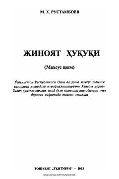

JHO'zbekiston Respublikasining Jinoyat kodeksiga bag'ishlangan yuridik oliy o'quv yurtlari uchun darslik.
Ushbu darslik O'zbekiston Respublikasining Jinoyat kodeksi asosida jinoyat huquqi o'quv kursiga muvofiq tayyorlangan. Unda Jinoyat kodeksining tegishli moddalarida javobgarlik belgilangan jinoyatlar uchun javobgarlik masalalari keng yoritilib, barcha jinoyat tarkibining belgilari tahlil qilingan. Kitob yuridik oliy o'quv yurtlari talabalari, magistrlari, aspirantlari va huquqni muhofaza qiluvchi organlar xodimlari uchun mo'ljallangan.